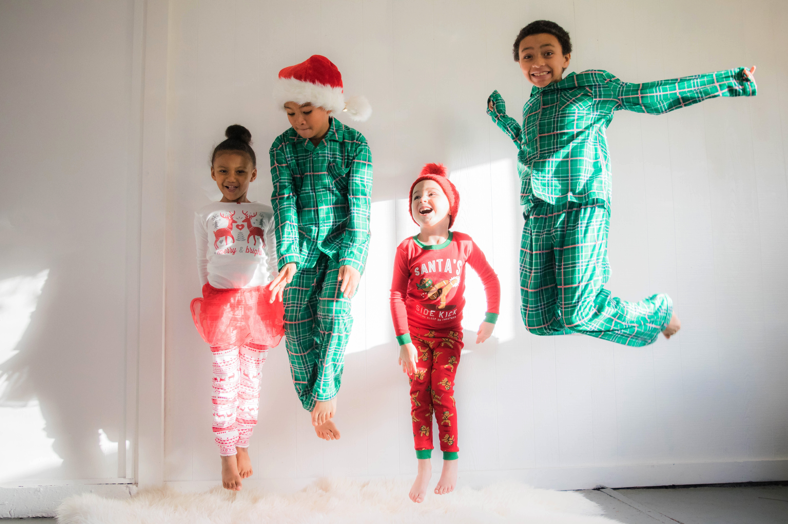

- Herr Spaghettibein
- Übernachtungsparty
- Ein kalter Wintertag
- Schorsch hat sich erkältet
- Die Ballonfahrt
Peppa Wutz - Übernachtungsparty(Sleepover)

YouTube에서 동영상 보기
Ich bin Peppa Wutz.
Das ist mein kleiner Bruder Schorsch.
Das ist Mama Wutz, und das ist Papa Wutz.
Peppa Wutz.
Die Übernachtungsparty
Es ist Abend. Peppa ist zu einer Übernachtungsparty bei Zoe Zebra eingeladen.
@ Hallo Zoe.
@ Hallo Peppa. Willkommen zu meiner Übernachtungsparty.
@ Ich hol Dich morgen früh wieder ab. Schlaf gut Peppa.
@ Tschüß.
Luisa, Lucy und Emily sind schon da.
@ Hallo zusammen!
@ Hallo Peppa!
@ Ich habe meinen Teddy mit. “Hallo zusammen!”
Zoe hat ihren Stoffaffen, Emily ihren Frosch, Molly ihre Eule und Luisa ihre Möhre.
Herr Zebra guckt Fernsehen.
@ Das ist besser.
@ Ich hab' was angeguckt!
@ Aber das war uns zu langweilig, Papa.
@ Papa Zebra geht jetzt ins Bett. Er muss morgen früh raus zum Postaustragen.
@ Du sagst es, Mama Zebra.
@ Und macht nicht mehr so lange.
@ Gute Nacht, Mama.
Peppa und ihre Freunde machen sich bettfertig.
Zoes kleine Schwestern, die Zwillinge Susi und Sina, wollen auch dabei sein.
@ Die Übernachtungsparty ist nur für große Mädchen.
@ Sie sind so süß, die Kleinen.
@ Können sie hierbleiben?
@ Na gut, aber ihr müsst versprechen, dass ihr wach bleibt.
@ Versprochen.
@ Ooooh, ein Klavier!
@ Ich habe Unterricht. Hört mal! Funkle, funkle, kleiner Stern.
@ Darf ich auch mal?
@ Ich auch!
@ Funkle, funkle, kleiner Stern; wer du bist, das wüsst' ich gern.
@ Psst, ihr müsst ganz leise sein, damit Papa Zebra schlafen kann. Ab in eure Schlafsäcke, bitte.
@ Was machen wir jetzt?
@ Bei Übernachtungspartys gibt's immer ein Mitternachtspicknick.
@ Was ist ein Mitternachtspicknick?
@ Wir essen was, aber heimlich.
@ Ich weiß, wo es was gibt, aber wir müssen ganz leise sein.
@ Psst, Lucy.
@ Psst, Peppa.
@ Leise.
Mama Zebra ist aufgewacht.
@ Das wird bestimmt das beste Mitternachtspicknick überhaupt.
@ Was ist denn hier los? Ihr weckt noch Papa auf. Also... wer kennt eine schöne, ruhige Gutenachtgeschichte?
@ Ich!
@ Und ich!
@ Ich fang' an. Es war einmal eine Fee, die war ganz winzig klein. Jetzt bist du dran, Peppa.
@ Und sie lebte tief im Wald.
@ Und sie war wunderschön.
@ Und sie hatte einen Zauberstab.
@ Sehr schön.
@ Jetzt du, Emily. Sag uns, wie es weitergeht.
@ Ehm, ich weiß nicht so genau.
@ Dann sag irgendwas, Emily.
@ Hauptsache, es ist nicht langweilig.
@ Na gut. Die kleine Waldfee traf ein großes Monster und das machte *töröööö*.
@ Iiih, wie schrecklich!
@ Was ist das für ein Lärm?"
Oh weh, der Krach hat Herrn Zebra aufgeweckt.
@ Entschuldigung, Papa. Das war die Geschichte von einer Fee.
@ Und einem schrecklichen Monster.
@ Und wir wollen so gern wissen, wie es weitergeht.
@ Also schön. Das Monster hob seine riesigen haarigen Pranken und trottete auf seinen großen haarigen Pfoten davon; und dabei sang es: 'Funkle, funkle, kleiner Stern; wer du bist, das wüsst' ich gern.'
Beim Gutenachtlied von Herrn Zebra sind alle eingeschlafen.
출처 : German / Peppa Wutz - Deutsch " Übernachtungsparty" & "Ein kalter Wintertag"